Über den Bereich "FAKT-Parameter - Belege - Erweiterte Optionen" können weitere allgemeine Einstellungen für die Belegerfassung der WinLine FAKT vorgenommen werden.
Hinweis
Standardmäßig wird das Fenster in einem "Lesemodus" geöffnet, d.h. es können die bestehenden Einstellungen kontrolliert, Änderungen allerdings nicht durchgeführt werden. Hierfür muss zunächst mit Hilfe des Buttons "Bearbeiten" der "Bearbeitungsmodus" aktiviert werden. Alternativ kann diese Aktivierung auch über das Kontextmenü der rechten Maustaste (Funktion "Applikation xxx bearbeiten") erfolgen.
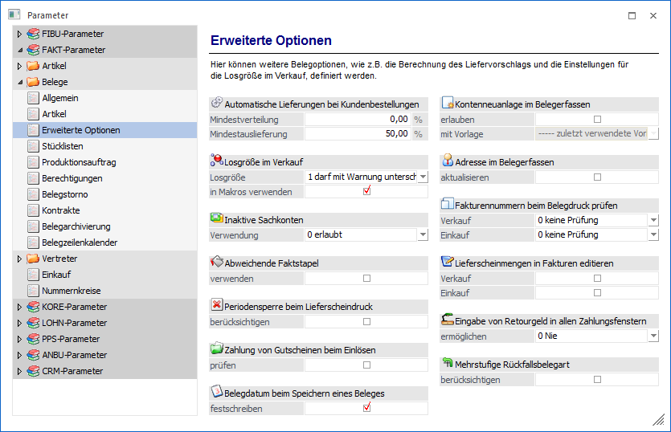
Automatische Lieferungen bei Kundenbestellungen
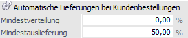
Ø Mindestverteilung
Eingabe des Mindestverteilungsprozentsatzes, d.h. es müssen mindestens xx Prozent des Gesamtauftrages geliefert werden, sonst wird der Auftrag in dem Programm "Kundenbestellungen bearbeiten" gar nicht zur Auslieferung vorgeschlagen (hierbei spielt natürlich auch noch die Option "Teillieferung erlaubt" aus dem Personenkontenstamm - Register "FAKT" - bzw. der Belegart eine Rolle).
Ø Mindestauslieferung
Eingabe des Mindestprozentsatzes, welcher bei einer Auslieferung im Programm "Kundenbestellungen bearbeiten" pro Artikelzeile erfüllt sein muss. Wird dieser Prozentsatz nicht erreicht, wird die Lieferung unterlassen (hierbei spielt natürlich auch noch die Option "Teillieferung erlaubt" aus dem Personenkontenstamm - Register "FAKT" - bzw. der Belegart eine Rolle).
Wenn der Lagerstand nicht den Prozentsatz für die Mindestauslieferung eines Auftrages erfüllt, dann kommt dieser Artikel auf die Sperrliste beim "Kundenbestellungen bearbeiten".
Beispiel
Kunde erteilt einen Auftrag über 40 Stück. Der Lagerstand beträgt 15 Stück und als Mindestauslieferung wurden 50% in den FAKT Parametern hinterlegt. Die 40 Stück kommen auf die Sperrliste, da die Mindestlieferung von 50% (20 Stück) nicht erreicht wurde.
Berechnung der Mindestverteilung
Für den Fall, dass mehrere Aufträge für einen Artikel vorhanden sind und der Lagerstand nicht ausreichend ist, kommt die Mindestverteilung zum Tragen.
Der Lagerstand des Artikels wird nach der folgenden Berechnung aufgeteilt:
ü 100 / gesamte Bestellmenge * tatsächlichen Lagerstand
Der Kunde bekommt nun die Menge, die sich aus dem berechneten Prozentsatz und seiner Bestellmenge ergibt.
Hinweis
Es wird immer aufgerundet. Der dritte Auftrag bekommt noch den Rest der auf Lager ist. Wenn dieser Rest die 50% Mindestauslieferung unterschreitet, dann bekommt der dritte Auftrag keine Lieferung.
Beispiel
Die Mindestauslieferung beträgt 50% und die Mindestverteilung 60%.
|
Artikel 1 |
Lagerstand 100 |
|
Artikel 2 |
Lagerstand 45 |
|
Auftrag 1 06.08.2025 |
|
|
Artikel 1 |
50 Stück |
|
Artikel 2 |
30 Stück |
|
Auftrag 2 07.08.2025 |
|
|
Artikel 1 |
50 Stück |
|
Artikel 2 |
20 Stück |
|
Auftrag 3 08.08.2025 |
|
|
Artikel 1 |
50 Stück |
|
Artikel 2 |
40 Stück |
Im Programm "Kundenbestellungen bearbeiten" werden folgende Mengen zur Lieferung vorgeschlagen:
Berechnung bei Artikel 1
100 / 150 * 100 = 67,67%
Auftrag 1 = 50 Stück * 67,67% = 33,3334 => wird auf 34 Stück aufgerundet
Auftrag 2 = 50 Stück * 67,67% = 33,3334 => wird auf 34 Stück aufgerundet
Auftrag 3 = 50 Stück * 67,67% = 33,3334 => nur mehr 32 Stück auf Lager
Berechnung bei Artikel 2
100 / 90 * 45 = 50% => die Mindestverteilung von 60% kommt zum Tragen
Auftrag 1 = 30 Stück * 60% = 18 Stück
Auftrag 2 = 20 Stück * 60% = 12 Stück
Auftrag 3 = 40 Stück => da nur mehr 15 Stück auf Lager sind, wird die Mindestauslieferung von 50% nicht erreicht, daher erfolgt keine Lieferung
Losgröße im Verkauf
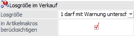
Ø Losgröße
Mit dieser Option kann definiert werden, was bei Unterschreitung der im Artikelstamm (Register "Preise" - Unterregister "Preise") hinterlegten Losgröße im Verkauf (d.h. Erfassung von Verkaufsbelegen oder Kontrakten) passieren soll.
Achtung
Die Prüfung der Losgröße, bzw. automatischer Korrektur dieser erfolgt NICHT bei Lieferscheinen und Fakturen, für die bereits ein Auftrag erfasst wurde.
ü 0 - darf unterschritten
werden
Wird diese Option gewählt, erfolgt weder eine Warnung o.ä. ausgegeben.
D.h. die eingetragene Losgröße wird nicht berücksichtigt.
ü 1 - darf mit Warnung
unterschritten werden
Bei Verwendung dieser Option erfolgt bei
Unterschreitung der hinterlegten Losgröße eine Warnung, welche mit "Ok"
bestätigt werden muss.
ü 2 - wird automatisch
aufgefüllt
Mit dieser Option wird bei Unterschreitung der hinterlegten
Losgröße auf diese aufgefüllt. Dabei erfolgt kein Hinweis; das Auffüllen erfolgt
automatisch.
Beispiel
Hinterlegte
Losgröße = 12 Stk.
Wird eine Artikelzeile mit Menge 10 Stk. erfasst, wird
automatisch auf 12 Stk. korrigiert.
Wird eine Artikelzeile mit Menge 13
Stk. erfasst, wird automatisch auf das nächste Vielfache - also 24 Stk.
erhöht.
ü 3 - wird mit Warnung automatisch
aufgefüllt
Bei Unterschreitung der Losgröße wird diese automatisch auf die
hinterlegte Menge aufgefüllt, wobei eine entsprechende Meldung angezeigt
wird.
Hinweis
Die hier hinterlegte Einstellung kann im Artikelstamm (Register "Preise" - Unterregister "Preise") pro Artikel nochmals übersteuert werden.
Achtung - Auswirkung bei Artikeln mit Ausprägungen
Die Eingabe im Ausprägungsfenster wird nur geprüft, wenn die einzelnen Ausprägungen einen eigenen Preisstamm haben. Wenn die Ausprägungen im Preisstamm auf den Hauptartikel verweisen, so wird die gesamte eingegebene Menge beim Druck des Buttons "Ok" kontrolliert. D.h. ist beim Artikel als Losgröße z.B. 12 Stk. hinterlegt, erfolgt beim Verlassen des Aufteilungsfensters mittels Button "Ok" die Prüfung, ob die Gesamtmenge den 12 Stk. entspricht.
Bei Verwendung der Option "2 - wird automatisch aufgefüllt" bzw. "3 - wird mit Warnung automatisch aufgefüllt" erfolgt eine Warnung sofern die angegebenen Mengen (Gesamtmenge der Ausprägungen) nicht der Losgröße entsprechen und das Aufteilungsfenster wird nicht geschlossen.
Ø in Makros berücksichtigen
Ist diese Option aktiviert, so wird in der Belegerfassung die Verkaufs-Losgröße beim Expandieren eines Artikelmakros berücksichtigt.
Inaktive Sachkonten
Ø Verwendung
An dieser Stelle kann definiert werden, ob auf inaktive Sachkonten abgeprüft werden sollen, wobei die Abprüfung beim Erfassen von Artikelzeilen im Beleg, beim Belegdruck, sowie bei der Belegumstellung und dem automatischen Belegdruck erfolgt. Folgende Varianten der Prüfung bzw. Verwendung stehen zur Verfügung:
ü 0 - erlaubt
ü 1 - erlaubt mit Warnung
ü 2 - nicht erlaubt (ab Stufe Angebot/Anfrage)
ü 3 - nicht erlaubt (ab Stufe Auftrag/Bestellung)
ü 4 - nicht erlaubt (ab Stufe Lieferschein)
ü 5 - nicht erlaubt (ab Stufe Faktura)
Abweichende Faktstapel
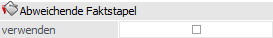
Ø (Abweichende Faktstapel) verwenden
Ist diese Option aktiviert, wird bei der Erfassung von Fakturen in der WinLine FAKT ein weiteres Eingabefeld "Buchungsstapel" eingeblendet, in welchem der Periodenstapel und alle FAKT-Stapel zur Auswahl zur Verfügung stehen.
Hinweis
Ein FAKT-Stapel wird in der WinLine FIBU im Programm "Buchen Dialog-Stapel" über den Button "Speichern" definiert, indem ein leerer Stapel mit aktiviertem Flag "Löschen" und aktiviertem Flag "FAKT-Stapel" gespeichert wird.
Periodensperre beim Lieferscheindruck
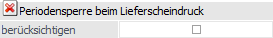
Ø (Periodensperre beim Lieferscheindruck) berücksichtigen
Ist die Option gesetzt und Perioden im Mandantenstamm gesperrt, erfolgt beim Druck/Rechnen eines Lieferscheins die Prüfung, ob der Beleg (Lieferschein) in dem Monat / Periode gedruckt werden darf.
Zahlungen von Gutscheinen beim Einlösen
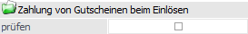
Ø (Zahlungen von Gutscheinen beim Einlösen) prüfen
Wenn diese Option aktiviert ist, so wird beim Einlösen eines Gutscheins geprüft, ob es zu dem eingelösten Gutschein auch eine Zahlung gibt (d.h. ob der Offene Posten des Gutscheins ausgeglichen ist). Falls dem nicht der Fall nicht, wird eine entsprechende Meldung beim Belege erfassen ausgegeben.
Belegdatum beim Speichern eines Beleges
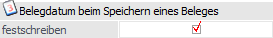
Ø (Belegdatum beim Speichern eines Beleges) festschreiben
Im Standard wird bereits beim Speichern des Belegs das hinterlegte Belegdatum in das zugehörige Datumsfeld des Belegs (z.B. Angebotsdatum) abgespeichert (Option ist aktiviert).
Wird die Option hingegen deaktiviert, so wird beim alleinigen Speichern eines Belegs das Belegdatum in keines der Belegdatumsfelder (Angebotsdatum / Auftragsdatum / Lieferscheindatum / Fakturadatum) abgespeichert, wodurch der Beleg "nur" ein Datum der Anlage erhält. Beim Laden des Belegs wird somit das Feld "Belegdatum" wieder mit dem Einlogdatum vorbelegt.
Hinweis
Beim Batchbeleg wird diese Funktion ebenfalls unterstützt, es sei denn in der Importdatei wird ein Datum explizit importiert.
Kontenneuanlage im Belegerfassen
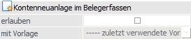
Ø (Kontenneuanlage im Belegerfassen) erlauben
Durch Aktivieren dieser Checkbox steht in den Belegerfassen-Menüpunkten "Belege erfassen" und "Telesales" der Button für die Kontenneuanlage zur Verfügung. Die Position des Buttons ist abhängig davon, ob das Formular "0 - Allgemein" oder "1 bis 99999 - individuelles Formular" genutzt wird:
ü 0 - Allgemein
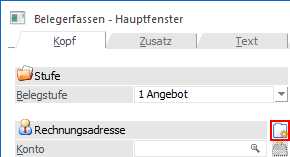
ü 1 bis 99999 - individuelles
Formular
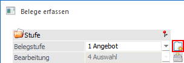
Wird der Button gedrückt, so wird der Personenkontenstamm (mit jener Vorlage, welche im Feld "mit Vorlage" hinterlegt wurde) geöffnet. Beim Speichern des angegebenen Personenkontos (neu angelegtes oder bestehendes Konto) wird dieses in die Belegerfassung übernommen und der Personenkontenstamm automatisch geschlossen.
Ø (Kontenneuanlage im Belegerfassen) mit Vorlage
Wurde die Option "Kontenneuanlage im Belegerfassen erlauben" aktiviert, so kann aus der Auswahlliste eine Vorlage gewählt werden, mit welcher der Personenkontenstamm geöffnet werden soll. Zur Auswahl stehen die Einträge "----- - zuletzt verwendete Vorlage", das Standard-Personenkontenfenster "00000 - Allgemein", sowie die individuell erstellten Personenkontenvorlagen.
Adresse im Belegerfassen
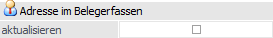
Ø (Adresse im Belegerfassen) aktualisieren
Wird diese Option aktiviert, so steht in den Belegerfassen-Menüpunkten (Belege erfassen, Telesales, Kontrakte abbuchen) ein Button zur Verfügung, mit dessen Hilfe die angegebenen Adressdaten aus dem Beleg in den jeweiligen Stammdatensatz (Personenkontenstamm, Interessentenstamm) übergeben werden können (nach Bestätigung der Laufnummer). Die Position des Buttons ist abhängig davon, ob das Formular "0 - Allgemein" oder "1 bis 99999 - individuelles Formular" genutzt wird:
ü Beleg erfassen "0 - Allgemein",
"Telesales" und "Kontrakte abbuchen" (Register "Kopf" und "Zusatz")
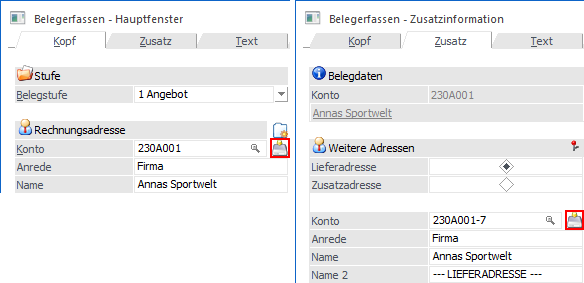
ü Belege erfassen "1 bis 99999 -
individuelles Formular" (Hauptführungskonto)
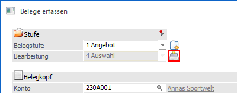
Aktualisiert werden folgende Werte:
ü Anrede
ü zu Handen
ü Straße
ü Straße 2
ü Landeskennzeichen
ü PLZ
ü PLZ2
ü Ort
ü Land
Fakturennummern beim Belegdruck prüfen
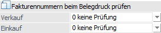
Ø Verkauf / Einkauf
Mit Hilfe einer Auswahlliste können verkaufs- und einkaufsseitig Optionen bezüglich einer erweiterten Prüfung auf doppelte Fakturennummern definiert werden. Folgende Einstellungen stehen zur Verfügung:
ü 0 - keine Prüfung
Es erfolgt
keine erweiterte Prüfung auf doppelte Prüfung, d.h. bei einer manuellen Änderung
der Fakturennummer erfolgt nur ein Hinweis, dass die Nummer ggfs. bereits
vorhanden ist.
ü 1 - Warnung wenn mehrfach
Wenn
eine Rechnung mit einer bereits vorhandenen Fakturennummer gedruckt wird, so
wird aus dem Belegerfassen eine Meldung ausgegeben, bzw. im Protokoll
(Stapeldruck, Batchbeleg-Import, Sammelfaktura) ein Hinweis angedruckt ("Die
Fakturennummer xxxx ist bereits vorhanden.").
ü 2 - Sperre wenn mehrfach
Wenn
eine Rechnung mit einer Fakturennummer gedruckt wird, welche bereits vorhanden
ist, so wird beim Druck aus der Belegerfassung eine Meldung ausgegeben bzw. im
Protokoll (Stapeldruck, Batchbeleg-Import, Sammelfaktura) eine Meldung
angedruckt ("Die Fakturennummer xxxx ist bereits vorhanden" bzw. "2 Beleg(e)
konnte(n) nicht gedruckt werden. Bitte kontrollieren Sie das
Belegdruckprotokoll.").
Der Belegdruck selbst wird in diesem Fall
abgebrochen!
ü 3 - hochzählen
Wenn eine
Rechnung mit einer Fakturennummer gedruckt wird, welche bereits vorhanden ist,
so wird die Nummer so lange hochgezählt, bis eine nicht verwendete
Fakturennummer gefunden wird. Diese wird in Folge gespeichert.
Zusätzlich
wird beim Druck aus dem Belegerfassen ein Hinweis ausgegeben bzw. im Protokoll
(Stapeldruck, Batchbeleg-Import, Sammelfaktura) eine Meldung angedruckt ("Die
Fakturennummer xxxx ist bereits vorhanden. Es wurde die Fakturennummer xxxx
verwendet.").
Lieferscheinmenge in Fakturen
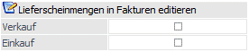
Ø Lieferscheinmenge in Fakturen editieren
Durch Aktivierung einer dieser beiden Optionen kann bei dem Aufruf eines gedruckten Lieferscheines in der Belegstufe "4 - Faktura" bzw. "8 - L.Faktura" die bisherige Liefermenge editiert werden. Wurde eine Änderung vorgenommen, so muss die Faktura in der weiteren Folge gerechnet oder gedruckt werden, d.h. ein Speichern ist nicht zulässig.
Hinweis
Das Editieren der Menge ist unter folgenden Umständen nicht möglich:
ü Der Artikel darf kein HSL-Artikel sein.
ü Der Artikel darf keine Lagerorte des Lagermanagements verwenden.
Wenn die Faktura gedruckt wird, wird für die geänderten Artikel die Differenzmenge im Lager gebucht. Im Artikeljournal wird eine Minuszeile mit der ursprünglichen Menge und eine Pluszeile mit der neuen Menge gebucht. In beiden Zeilen wird im Text die Fakturennummer, in der Spalte Belegnummer aber die Lieferscheinnummer gespeichert, damit nach einem eventuellen Storno der Faktura bis zur Vorstufe Lieferschein korrekt editiert werden kann.
Hinweis
Wenn die Lieferantenfaktura laut Freigabe-Definition nicht freigegeben ist, können die Belegzeilenfelder für "Liefermenge", "Preis", "Rabatt" und "BNK" nicht editiert werden, auch wenn diese Option in den FAKT-Parameter aktiviert ist.
Eingabe von Retourgeld in allen Zahlungsfenstern
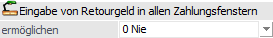
Ø Eingabe von Retourgeld in allen Zahlungsfenstern ermöglichen
An dieser Stelle kann definiert werden, ob die Eingabefelder "Retourgeld" und "Zahlungsbetrag" in den Programmfenstern "Belegerfassen - Zahlung" und "Zahlungen" zur Verfügung stehen sollen. Folgende Varianten stehen hierfür zur Verfügung:
ü 0 - Nie
Die Felder stehen in
"Belegerfassen - Zahlung" und "Zahlungen" nicht zur Verfügung.
ü 1 - Immer
Die Felder
"Retourgeld" und "Zahlungsbetrag" stehen in den Fenstern "Belegerfassen -
Zahlung" und "Zahlungen" immer zur Verfügung.
ü 2 - Nur bei Barbelegarten
Die
Felder stehen in den Fenstern "Belegerfassen - Zahlung" und "Zahlungen" nur zur
Verfügung, wenn mit einer Barbelegart gearbeitet wird.
Hinweis
Für das Fenster "Barrechungen" der WinLine FAKT gilt die Einstellung nicht, d.h. dort werden die beiden Felder immer angezeigt.
Mehrstufige Rückfallsbelegart
Ø (Mehrstufige Rückfallsbelegart) berücksichtigen
Durch Aktivieren dieser Option wird der Nummernkreis nicht nur aus der hinterlegten Rückfallsbelegart berücksichtigt, sondern, bei leerer Belegnummer, auch aus den weiteren Rückfallsbelegarten.
Beispiel
Für Reparaturlieferungen sind die eigenen Belegarten (R1 und R2) angelegt, wobei Belege mit diesen Belegarten einen gemeinsamen Nummernkreis für die Belegstufe "Lieferschein" besitzen sollten.
Für die Belegstufen Angebot, Auftrag und Rechnung soll der Belegnummernkreis der Standard-Belegart 1 verwendet werden.
Bei der Belegart "R1" ist der Nummernkreis für die Belegstufe "Lieferschein" hinterlegt und als Rückfallsbelegart die Belegart "1 - Standard" angegeben.
Bei der Belegart "R2" ist für die Belegstufe "Lieferschein" keine Belegnummer angegeben und als Rückfallsbelegart die Belegart "R1" hinterlegt.
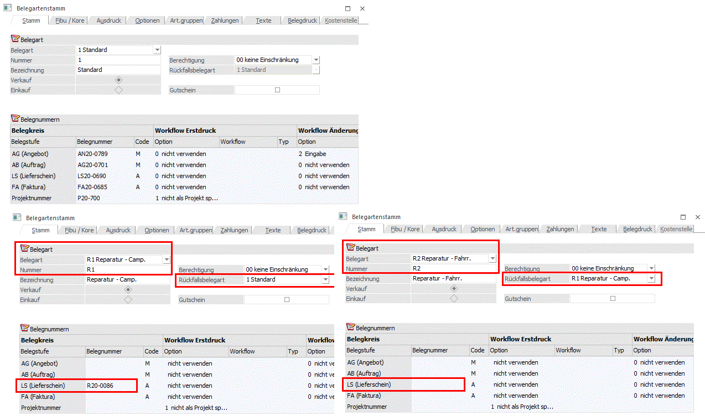
Wird die Option "Mehrstufige Rückfallsbelegart berücksichtigen" nicht aktiviert, so erhalten die Belege folgende Belegnummern:
Belege mit der Belegart "R1"
ü Angebot: AN20-0790
ü Auftrag: AG20-0702
ü Lieferschein: R20-0086
ü Rechnung: FA20-0686
Belege mit der Belegart "R2"
ü Angebot: 1
ü Auftrag: 1
ü Lieferschein: R20-0086
ü Rechnung: 1
Wird die Option "Mehrstufige Rückfallsbelegart berücksichtigen" aktiviert, so erhalten sowohl Belege mit der Belegart "R1", als auch jene Belege mit der Belegart "R2" folgende Belegnummern:
Belege mit der Belegart "R1" bzw. "R2"
ü Angebot: AN20-0790
ü Auftrag: AG20-0702
ü Lieferschein: R20-0086
ü Rechnung: FA20-0686